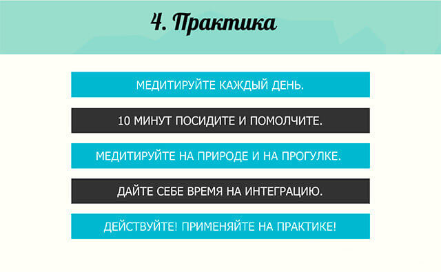

Relax
Relax
Relax
Relax
Эта статья подскажет вам, как получить максимальный эффект от медитации, несмотря на загруженность вашей жизни (и мыслей). Прошли те времена, когда нужно было тратить часы, а то и дни, чтобы научиться медитировать. 10 минут в день вполне достаточно, если вы сосредоточитесь на качестве, а не количестве.
У традиционной позы для медитаций — позы лотоса — есть несколько преимуществ.
Убедитесь, что при этом ваш позвоночник остается прямым.
Ваша задача — занять наиболее комфортное для практики медитации положение, чтобы не отвлекаться на возможные болевые реакции в «застывшем» теле. Можно ли медитировать в положении лежа? Можно, но нежелательно… в лежачем положении легко впасть в дремотное состояние, а то и вовсе уснуть. Хотя хороший сон еще никому не вредил )
Как правильно медитировать:
Медитация — это процесс познания себя.
В процессе медитации вы учитесь концентрироваться на том, что происходит внутри вас, учитесь переключать внимание с внешних раздражителей, суеты и забот и погружаться внутрь себя.
На начальном этапе вам придется столкнуться с неуправляемым внутренним диалогом, особенно, если ваш ум переполнен мыслями.
Прежде чем приступать к практике медитации, выразите намерение, что вы будете просто наблюдать за тем, что происходит в процессе.
Не пытайтесь контролировать ваше дыхание. Не ругайте себя за мысли, скачущие в голове.
Наблюдайте, позволяйте и принимайте все процессы, происходящие у вас внутри. Позвольте себе прочувствовать, как ваше тело откликается на практику медитации.
Не накладывайте никаких ожиданий, будьте открыты всему, что разворачивается в вашем сознании. Просто наблюдайте. И все.
Что должно произойти, произойдет.
Не ругайте себя, не беспокойтесь, насколько правильно вы выполняете практику.
Второй наиболее распространенной и востребованной техникой медитации после медитации для остановки внутреннего диалога (классический восточный вариант) является управляемая медитация.
Во время управляемой медитации вы обычно следуете за голосом ведущего, используя силу визуализации.
Главное отличие заключается в том, что управляемая медитация ведет вас к определенной цели, добиться которой вы желаете с помощью медитации.
Напомню, что во время медитации ваш мозг переключается на альфа частоту, синхронизируется работа обоих полушарий, вам открывается расширенный уровень сознания, и вы легко можете заложить НАМЕРЕНИЕ.
Именно от намерения зависит то, что вы получите в результате медитации.
Поскольку ваше намерение порождает определенное поле, собирает вокруг вас энергию, необходимую для реализации поставленной вами цели.
Управляемая медитация должна включать в себя намерение:
Поэтому в управляемой медитации так важны пояснения, которые даются ПЕРЕД медитацией.
Вы не просто слепо следуете за фантазией того, кто проводит медитацию.
Вы должны четко сформулировать ваше намерение: чего вы хотите достичь в процессе вашей визуализации.

Для того, чтобы сохранить концентрацию внимания во время медитации, желательно выбрать фокус внимания. Это может быть мантра, некий предмет (реальный или виртуальный), музыка или ритм вашего дыхания. Фокус внимания поможет вам пресечь поток хаотичных мыслей в голове. Именно для этого во всех моих медитациях я предлагаю сперва сосредоточиться на дыхании сердцем, когда вы дышите через центр груди, где расположено ваше духовное сердце.
Простая, но эффективная техника, чтобы справиться с внутренним диалогом:
Если ваш ум чересчур загружен, во время медитации в вашей голове будут мелькать десятки, а то и сотни мыслей, отвлекая вас от процесса и сбивая фокус внимания. Используйте технику отпускания мыслей. Вы не можете управлять мыслями, которые возникают у вас в уме, но вы можете выбрать, на какой из них вы сфокусируетесь. Наблюдайте за потоком ваших мыслей как бы со стороны: вы их видите, осознаете, но не цепляетесь за них… Вы просто наблюдаете, но НЕ РЕАГИРУЕТЕ на них. По мнению многих участников моих медитаций хорошо работает фраза: Эту мысль я уже думал/а!

Ваш ум изощренно хитр — он будет выискивать любую возможность, чтобы отвлечь вас от погружения в себя:
Даже если вас отвлекли во время медитации, погасите волну раздражения внутри — это не их вина, что вы не смогли удержать фокус внимания. Это вам требуется больше практики, чтобы перестать реагировать на внешние раздражители.
Лучший способ получить максимальный эффект от медитации — практиковать ежедневно. Выделите с утра себе 10 минут на то, чтобы посидеть в тишине и помолчать. Всего 10 минут, но вы зададите себе гармоничный настрой на целый день. Хорошо медитировать на природе, во время прогулки, даже занимаясь рутинными бытовыми вещами. Управляемые медитации я не рекомендую делать каждый день.

Вам потребуется время на осознание и интеграцию нового опыта… на то, чтобы отследить результат и понять, стоит ли повторять практику, или достаточно одной медитации.
Вы же понимаете, что за любой практикой следует этап ПРИМЕНЕНИЯ в реальной жизни. Можно хоть несколько раз в день медитировать на любовь к себе, но пока вы не начнете проявлять любовь себе в жизненных ситуациях, когда вы отказывали себе в этом, мало что поменяется.
Таким образом формула успешной медитации выглядит так: